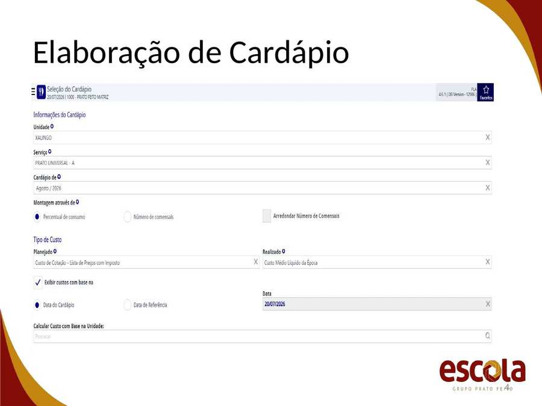
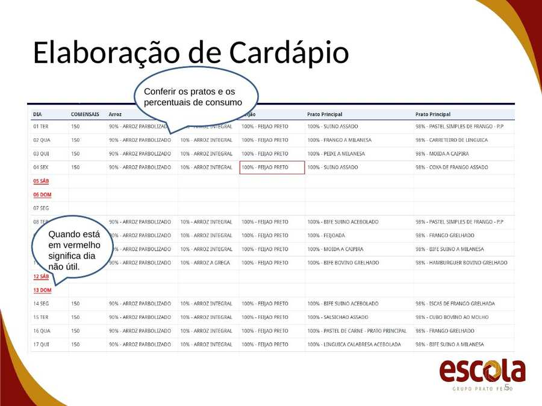
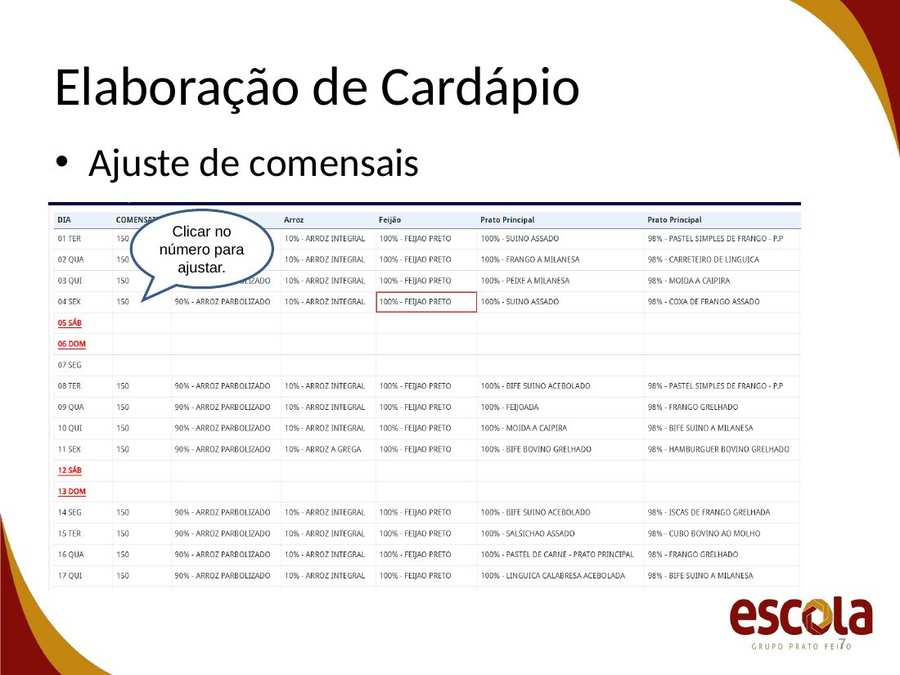
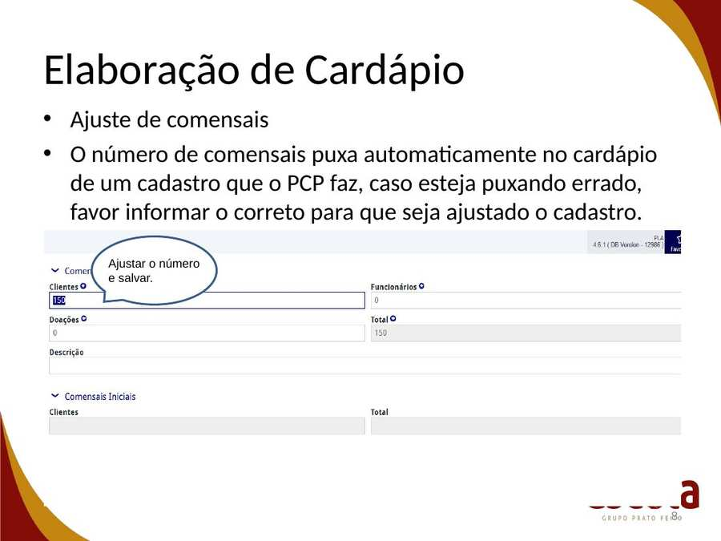
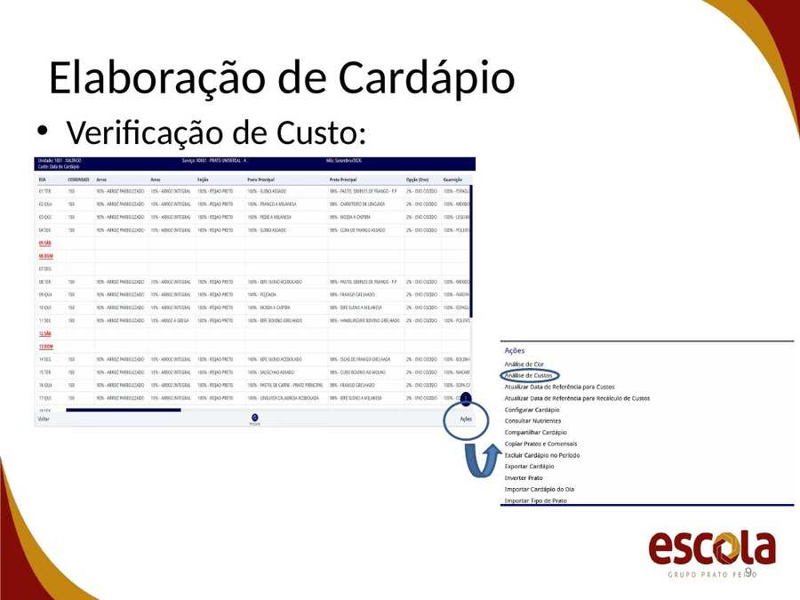
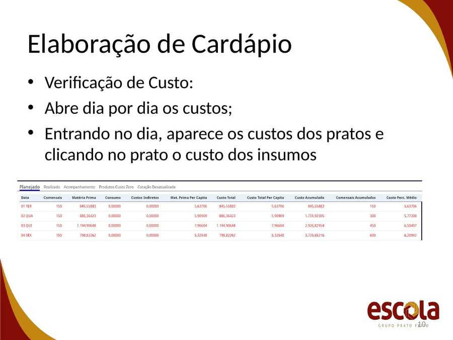
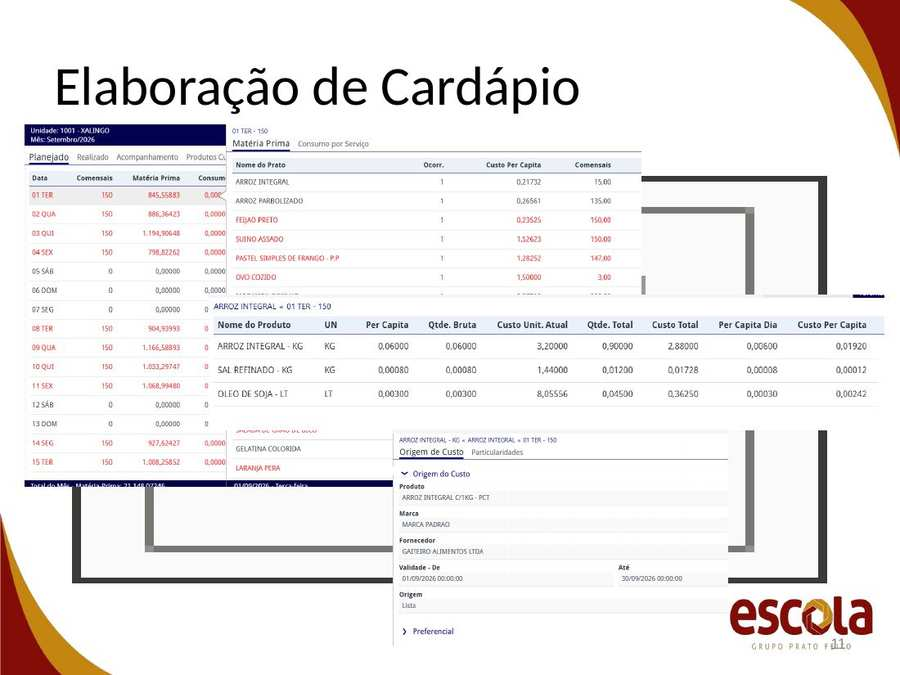
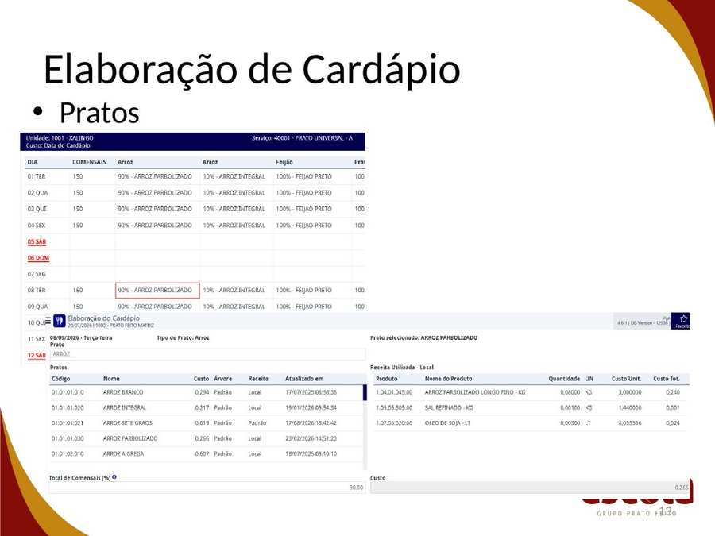

Elaboração de Cardápio
- Conferir os pratos e os percentuais de consumo
- Quando está em vermelho significa dia não útil.
- Informações importantes:
- Se a unidade não tiver refeições em algum dia precisa, ser excluído o cardápio do dia;
- Quando o dia estiver em vermelho, significa dia não útil, caso tenha refeições, precisamos ativar o dia e informar cardápio;
- Se a unidade não trabalha em finais de semana e o cliente solicita eventualmente, precisa informar ao PCP o cardápio para que seja inserido no sistema.
- Ajuste de comensais
- Clicar no número para ajustar.
- O número de comensais puxa automaticamente no cardápio de um cadastro que o PCP faz, caso esteja puxando errado, favor informar o correto para que seja ajustado o cadastro.
- Ajustar o número e salvar.
- Verificação de Custo:
- Abre dia por dia os custos;
- Entrando no dia, aparece os custos dos pratos e clicando no prato o custo dos insumos
- Pratos:
- Na elaboração de cardápio, entrando na receita, consigo visualizar os per capitas, o custo e pesquisar outras receitas;
- O ajuste de per capitas deve ser enviado para analista de PCP.
- Pratos







